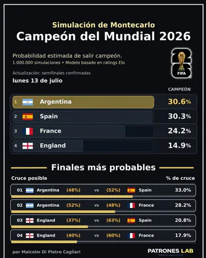
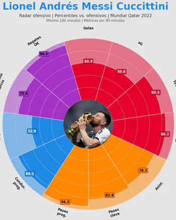

Şampiyonlar Ligi 2026/27 · Puan projeksiyonu
Poisson ve Monte Carlo ile lig aşamasının sonundaki puanların projeksiyonu, medyan ve 25-75 ve 5-95 yüzdelik aralıklarını gösterir.
Gönderiye bakın ↗Poisson ve Monte Carlo ile lig aşamasının sonundaki puanların projeksiyonu, medyan ve 25-75 ve 5-95 yüzdelik aralıklarını gösterir.
Gönderiye bakın ↗
Poisson ve Monte Carlo ile yapılan bir milyon simülasyon aracılığıyla 3. maç gününe kadar öngörülen son pozisyonların gelişimi.
Gönderiye bakın ↗
Bir milyon Monte Carlo simülasyonu kullanılarak LaLiga ekipleri için öngörülen nihai konumların ısı haritası.
Gönderiye bakın ↗
Şampiyonlar Ligi'nde ilk 8'e girme, play-off ve elenme olasılıklarını tahmin etmek için Poisson ve Monte Carlo ile simülasyon.
Gönderiye bakın ↗
Her takım için Elo derecelendirmesi, öngörülen puanlar ve simüle edilmiş sonuçların aralıkları arasındaki karşılaştırma.
Gönderiye bakın ↗
Yarışmanın en sık sonuçlarını incelemek için simüle edilmiş noktaların histogramları.
Gönderiye bakın ↗
En olası sonuç aralığını göstermek için yüzdelikler kullanılarak nihai konumların karşılaştırılması.
Gönderiye bakın ↗
Sonuçları tahmin etmek ve sınıflandırmak için Poisson modelinin ve Monte Carlo simülasyonunun sunumu.
Gönderiye bakın ↗
LinkedIn'nun simülasyonlar hakkındaki gönderisi. Doğrulanmayı bekleyen belirli içerik.
Gönderiye bakın ↗
Yarışma günleri boyunca takımların tahmini pozisyonlarının gelişimi.
Gönderiye bakın ↗
Şampiyonlar Ligi sonuçlarını yansıtmak için Poisson ve Monte Carlo simülasyonuyla atılan gol sayısının modeli.
Geliştirme aşamasındaki projeyi görün ↗
Elo reytingi ile her takımın Milletler Ligi'ni kazanma tahmini olasılığı arasındaki karşılaştırma.
Gönderiye bakın ↗
Grup aşamasından finale kadar yarışmanın farklı aşamalarında ilerleme şansı.
Gönderiye bakın ↗
UEFA Uluslar Ligi'ndeki olasılıkları analiz etmek için simülasyon modelinin sunumu.
Gönderiye bakın ↗
AENA'nın kamuya açık verilerine dayanarak Balear Adaları'ndaki hava aktivitesinin analizi.
Gönderiye bakın ↗
Grupları kazanma, play-off'ları aşma ve şampiyonluğu kazanma olasılıklarının simülasyonu.
Projeye bakın ↗
Son konum olasılıkları yeni sonuçlar ve Elo derecelendirmeleriyle güncellendi.
Gönderiye bakın ↗
LaLiga 2026/27 simülasyonuna ilişkin yayın. Ayrıntılar doğrulanmayı bekliyor.
Gönderiye bakın ↗
LaLiga'nun pozisyon olasılıklarını ve nihai sonuçlarını tahmin etmek için senaryoların simülasyonu.
Geliştirme aşamasındaki projeyi görün ↗
LaLiga 2026/27 senaryo yayını. Ayrıntılar doğrulanmayı bekliyor.
Gönderiye bakın ↗
İşlem verilerindeki kümelenmeyi ve atipik işlemleri tespit etmek için DBSCAN uygulaması.
Gönderiye bakın ↗
Zamansal, bölgesel ve ekonomik kalıpları belirlemek için Chicago'daki taksi gezilerini araştırmak.
Gönderiye bakın ↗
Dolandırıcılıkla ilgili işlem operasyonlarını ve sinyalleri analiz etmeye yönelik sınıflandırma modeli.
Gönderiye bakın ↗
Patrones Lab ve veri analizi, modelleri ve görselleştirme projelerinin sunumu.
Gönderiye bakın ↗
Meteorolojik olaylardan kaynaklanan ekonomik zararları incelemek için sınıflandırma tekniklerini karşılaştıran model.
Geliştirme aşamasındaki projeyi görün ↗
Gelişimi, kategorileri ve coğrafi dağılımı keşfetmek için tedarikçilerle yapılan harcamaların kontrol paneli.
Projeye bakın ↗
Ülkelere göre çoğaltmaları, gelişimi ve dağıtımı analiz etmek için Spotify sıralama panosu.
Geliştirme aşamasındaki projeyi görün ↗
Takımların kupayı kazanma olasılıkları ve finalde karşılaşabilecek ekipler için tahminler güncellendi.
Gönderiyi görüntüle ↗
Çeyrek final eşleşmelerinin simülasyonu ve takımların turnuvada bir üst tura çıkma olasılıkları.
Gönderiyi görüntüle ↗
Yarı finale ve finale çıkma, ardından kupayı kazanma olasılıklarının tahmini.
Gönderiyi görüntüle ↗
Son 32 turunun ardından takımların üst turlara çıkma ve şampiyon olma olasılıkları güncellendi.
Gönderiyi görüntüle ↗
O tarihte bilinen sonuçlara göre takımların her turu geçme olasılıkları tahmin edildi.
Gönderiyi görüntüle ↗
Her takımın ilerleme ve şampiyonluk olasılığını tahmin etmeye yönelik simülasyon modeli.
Projeye bakın ↗
Arjantinli oyuncuların her 90 dakikada bir pozisyon ve metriklere göre hesaplanan yüzdelik dilimleri kullanılarak karşılaştırılması.
Gönderiye bakın ↗
Yüzdelik radarlar kullanılarak Katar Dünya Kupası'ndaki bireysel performansların görsel karşılaştırması.
Projeye bakın ↗
Arjantin ile Fransa arasındaki finalde topla yapılan hareketlerin hücum tehdidini nasıl değiştirdiğinin analizi.
Gönderiyi görüntüle ↗Futbol ve Katar 2022'deki Arjantin-Fransa maçının olasılıkları hakkında makale.
Makaleyi okuyun ↗
Katar Dünya Kupası’nda her şutun gol olma olasılığını tahmin eden model.
Projeyi görüntüle ↗2022 Katar Dünya Kupası’nda topla yapılan hareketlerin yarattığı hücum tehdidinin analizi.
Projeyi görüntüle ↗
Chicago'da bildirilen taksi yolculuğu talebini ve rotalarını keşfetmek için etkileşimli kontrol paneli.
Gönderiye bakın ↗
Açık verilerle hazırlanmış, Chicago'nun farklı bölgelerine yapılan gezilerin yoğunlaşmasının haritası.
Gönderiye bakın ↗
Chicago'daki taksilerin kalkış ve varış bölgelerinin, rotalarının ve mekânsal yoğunlaşmasının analizi.
Gönderiye bakın ↗Bildirilen gezilerde daha fazla aktivite ve başlangıç ve varış akışına sahip alanların haritası.
Projeye bakın ↗Chicago'daki taksi faaliyetlerini, ücretlerini ve rotalarını keşfetmek için etkileşimli kontrol paneli.
Projeye bakın ↗Raporlanan yolculukların güne, saate, mesafeye ve orana göre nasıl değiştiğinin analizi.
Gönderiye bakın ↗Açık verilere dayalı olarak Chicago'daki şehir içi taksi yolculuğu ağına ilişkin makale.
Makaleyi okuyun ↗Chicago’da kayda geçen taksi yolculuklarında talep, güzergâh ve ücret analizi.
Projeye bakın ↗
Fiyatların lokasyona, merkeze uzaklığa ve mahalle özelliklerine göre analizi.
Projeye bakın ↗
Her oda tipinde nispeten pahalı veya ucuz konaklama birimlerini birbirinden ayıran model.
Projeye bakın ↗
Londra'daki Airbnb konaklama yerlerinin fiyatlarının ve bölgesel dağılımının karşılaştırılması.
Gönderiye bakın ↗Londra'daki Airbnb konaklama fiyatları ve bölgesel dağılımı hakkında makale.
Makaleyi okuyun ↗Londra mahalleleri arasındaki fiyatları, konaklama türlerini, müsaitlik durumunu ve farklılıkları keşfetmek.
Projeye bakın ↗Balear Adaları havalimanlarındaki yolcuların, bağlantıların ve mevsimselliğin analizi.
Gönderiye bakın ↗AENA açık verilerine dayanan Balear Adaları'ndaki turizmle ilgili makale.
Makaleyi okuyun ↗AENA'dan kamuya açık verilerle Mallorca, İbiza ve Menorca'daki hava trafiğinin analizi.
Projeye bakın ↗Tipik olmayan işlemleri ve olası dolandırıcılık modellerini belirlemek için yoğunluk gruplaması.
Projeye bakın ↗Dolandırıcılık riskini tahmin etmek ve ilgili sinyalleri yorumlamak için işlemlerin denetlenen sınıflandırması.
Projeye bakın ↗Operasyonların K-ile segmentlere ayrılması, dolandırıcılıkla ilişkili alışılmadık davranışları keşfetme anlamına gelir.
Projeye bakın ↗